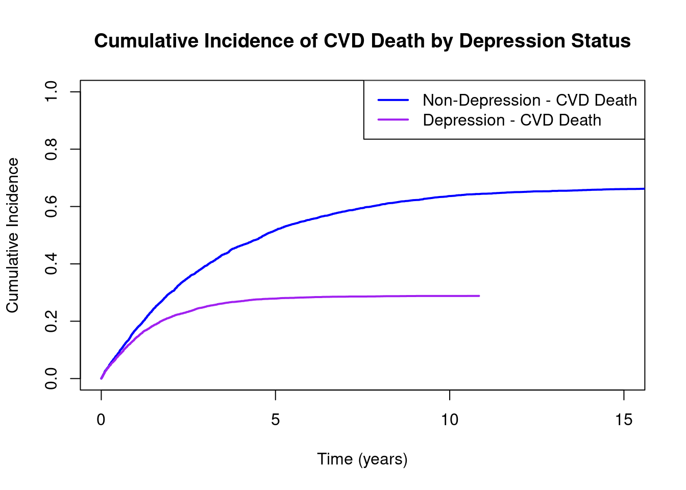
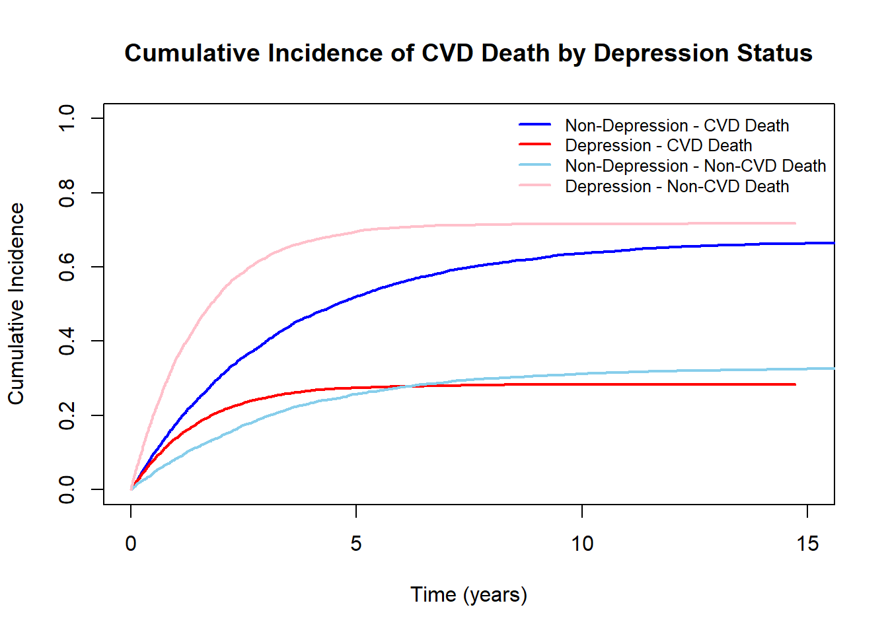
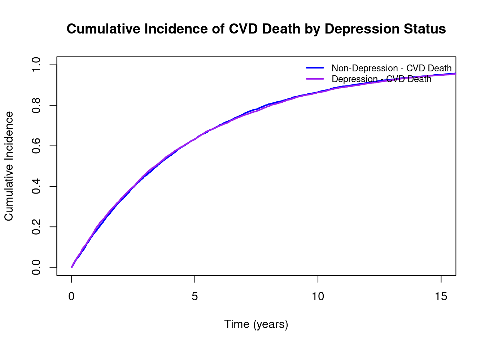

경쟁 위험(Competing risk)은 한 종류의 이벤트가 발생하면 다른 이벤트가 발생할 수 없는 상황으로 정의됩니다. 예를 들어, 암 재발이 event of interest 인 경우 사망이 competing risk로 작용할 수 있습니다 (사망한 암 환자에게는 암 재발이라는 event가 발생 할 수 없기 때문). 경쟁 위험을 무시하면 모집단의 생존 함수나 이벤트 발생률을 과대 혹은 과소평가 할 위험이 생기기에 이를 고려한 분석이 필요한 경우들이 있습니다. 여러 상황들을 살펴보고, 어떤 지표들을 이용했을 때 어떤 해석이 가능한지 알아보도록 하겠습니다.
결국 생존 함수란 각 사건 발생 시점에서의 생존 확률(어떤 이벤트도 발생하지 않을 확률)을 누적 곱하여 계산한 시간\(t\)까지 생존할 확률을 뜻합니다.
위험 함수
\[
h_k(t) = \lim_{\Delta t \to 0} \frac{P(t \leq T < t + \Delta t, \epsilon = k \mid T \geq t)}{\Delta t}
\]
\(\lambda_k(t)\): 이벤트 유형 \(k\)의 원인별 위험 함수
T: 이벤트 발생 시간
\(\epsilon\): 이벤트 유형 지표(Ex. \(\epsilon\) = 1: event of interest, \(\epsilon\) = 2: competing risk )
결국 위험 함수란 각 시점에서 event k 가 발생할 확률을 뜻합니다.
누적발생률 함수(CIF)
\[
CIF_k(t) = \int_{0}^{t} h_k(u) S(u) \, du
\]
이벤트 k에 대한 누적발생률 함수란 결국 시점 마다 생존해 있을 확률 \(S(t)\) 와 그 시점 에서 k가 발생할 위험 \(h_k(t)\)를 곱하여 합산한 값으로, 시점 t에 이번트 k의 누적 발생률을 뜻하게 됩니다.
왜 경쟁 위험 분석에서 CIF를 사용할까?
경쟁 위험이 없는 생존 분석에서는 대게 Kaplan-Meier 추정치를 사용하지만, 이는 앞서 말했던 예시와 같이 이벤트 발생률을 과대 혹은 과소 평가할 위험이 있기 때문에 경쟁 위험이 있는 경우 적합하지 않은 경우가 많습니다. 암 재발과 사망의 예시를 생각해보겠습니다. Kaplan-Meier 추정치의 경우 사망한 환자의 경우 censoring 된 것으로 처리가 되어 “이 환자의 경우 이후 정보는 알 수 없다”고 간주를 하고 계산하는 추정치입니다. 하지만, 현실에서는 사망한 환자의 경우 이후 암 재발이 일어날 가능성이 0이라는 것을 알 수 있습니다. 반면 CIF의 경우 수식에서도 볼 수 있듯이 사망이 발생해버린 사람은 이미 사건이 발생한 상태로 처리가 되며, 경쟁 이벤트가 발생했다는 \(CIF_2(t)\)라는 누적발생률 함수에 따로 기록되고 있는 것을 알 수 있습니다.
Competing Risk Analysis
경쟁 위험이 없는 생존 분석의 경우 \(1-CIF(t)\)가 그 정의상 생존 함수 \(S(t)\)와 일치하게 되기 때문에 \(S(t)\)를 고려한 분석이 곧 \(CIF(t)\)에 대한 분석으로 정의할 수 있었습니다. Cox 모델의 기본 식의 경우 아래와 같습니다. \[
h(t | X) = h_0(t) \exp(\beta X)
\] 결국 위험 함수의 \(\beta\)값을 추정하는 것이 목표이며, 경쟁 위험이 없는 경우 위험 함수를 생존 함수를 통해 추정하는 것이 아래의 식의 형태로 가능합니다. \[
h(t | X) = - \frac{d}{dt} \log(S(t | X))
\]
Fine-Gray Method
경쟁위험이 존재하는 경우 생존 함수인 \(S(t)\)가 \(1-CIF(t)\)로 치환되지 않기 때문에 전통적 위험함수로는 \(CIF(t)\)를 추정할 수 없다는 한계가 있습니다. (\(S(t)+CIF_1(t)+CIF_2(t)+....+CIF_k(t)=1\)이기 때문) 따라서, Fine-Gray Method 에서는 \(1-CIF(t)\)의 시간에 따른 변화량을 추적하는 함수인 Subdistribution hazard function을 새로 추정합니다.
하위 분포 위험의 경우 아래의 식과 같이 계산할 수 있습니다. \[
h_k^{sd}(t)
\;=\;
-\,\frac{d}{dt} \,\ln\!\bigl\{1 - CIF_k(t)\bigr\}
\;=\;
\frac{h_k^{cs}(t) S(t)}{\,1 - CIF_k(t)\,}.
\] 하위 분포 위험의 경우 \(h_k^{sd}(t)\)로 표기를 하고 이는 \(CIF_k(t)\)의 변화량을 추정할 수 있는 위험 함수입니다. 또한 여기서 \(h_k^{cs}(t)\)의 경우 cause-specific hazard function으로, 앞서 정의한 위험함수와 같은 의미를 가집니다.(subdistrivution hazard function과 구분하기 위해 이렇게 지칭하도록 하겠습니다). 그렇다면 \(h_k^{sd}(t)\)는 어떻게 해석을 할 수 있을지 알아보겠습니다. 우선 \(S(t)\)가 \(1-CIF(t)\)로 치환이 되는 경쟁위험이 없는 상황에서는 cause-specific hazard function과 완전히 동일하다는 것을 알 수 있습니다. 하지만 그렇지 않은 경우 cause-specific hazard function에 \(\frac {S(t)}{\,1 - CIF_k(t)\,}\)을 곱한 값이 된다는 것을 알 수 있고, 이는 관심 event가 발생하지 않은 모든 사람이 분모 즉, risk set에 포함된다는 것을 알 수 있습니다. 이는 곧 아래의 수식으로 표현될 수 있습니다.
\[
h_k^{sd}(t) = \lim_{\Delta t \to 0} \frac{P(t \leq T < t+\Delta t, \text{Cause} = k \mid T \geq t \cup \text{(Cause } \neq k \text{ 발생)})}{\Delta t}
\] 예를 들어, event of interest가 암의 재발이고 comepting risk가 사망인 경우 전통적 생존 분석에서는 시간 t에서 살아 있는 환자들이 risk set이 된다면 subdistribution hazard function 에서는 시간 t에서 살아있는 사람들과 시간 t전에 competing risk를 경험한(사망한)사람들 또한 risk set에 포함된다는 차이가 있습니다. Fine-Gray Method에서는 이 subdistribution hazard function을 이용하여 \(\beta\)값을 추정하여 \(CIF(t)\)에 대한 보다 직접적인 추정을 가능하게 하는 방법입니다. Fine-Gray Method 분석법을 실행하는 방법과 전통적 생존 분석과 어떻게 비교하여 어떻게 수치들을 해석할 수 있는지를 알아보겠습니다.
Fine-Gray Method 와 전통적 생존함수 비교
다음과 같은 상황을 한번 생각해보겠습니다. 심부전 환자에서 중증 우울증 진단 여부에 따른 심장질환 관련 사망여부가 달라지는지 관심이 있는 상황을 가정해보겠습니다. 이 경우 CVD death가 Event of Interest가 되고 non-CVD death가 Competing risk가 될 것입니다. (non-CVD death로 사망하는 경우 심장 질환 관련 사망으로 사망하는지 관찰할 수 없기 때문). 우울증 진단 여부가 심장 질환 관련 사망에 관련이 없지만, 자살율을 크게 증가시켜 non-CVD death를 많이 발생시킨다고 한번 가정해보도록 하겠습니다. 가정에 따라 데이터를 한번 만들어보겠습니다.
ID Time Event Sex Depression CVD_time
1 1 4.96 1 Female No 4.96
2 2 0.92 1 Female No 0.92
3 3 1.48 1 Male No 1.48
4 4 0.09 1 Male No 0.09
5 5 0.66 2 Female No 14.27
6 6 0.03 1 Male No 0.03
7 7 1.00 1 Male No 1.00
8 8 0.47 1 Male No 0.47
9 9 1.70 1 Male No 1.70
10 10 2.36 1 Female No 2.36
11 11 8.27 2 Male No 17.14
12 12 1.45 1 Female No 1.45
13 13 9.71 1 Female No 9.71
14 14 0.81 1 Female No 0.81
15 15 8.30 1 Female No 8.30
데이터에서 Time은 Death(CVD, non-CVD 포함)가 발생한 시점입니다. R의 cmprsk 패키지를 통해 fine gray method로 분석을 진행하고, 전통적 생존 분석또한 함께 진행해보겠습니다.
$table
HR(95%CI) P value
Depression_num "1.02 (0.95,1.09)" "0.562"
$metric
[,1] [,2]
<NA> NA NA
No. of observations 10000.00 NA
No. of events 4784.00 NA
AIC 77070.23 NA
$caption
[1] "Cox model on time ('NA') to event ('NA')"
exp(coef= beta)즉 Hazard ratio가 1이고 p-value가 0.936으로, 우울증 여부가 CVD-death에 영향을 미치지 않는 다는 것을 알 수 있습니다. 이는 데이터를 만들때의 가정과 동일하기 때문에 전통적 생존분석은 이를 잘 반영한다는 것을 알 수 있습니다. 이번엔 competing risk를 고려한 fine gray method로 분석을 해보겠습니다.
exp(coef) 즉 subdistribution hazard ratio가 0.363이고, p value 가 <0.01임으로 우울증이 있는 사람에게는 CVD-death가 덜 발생한다고 해석할 수 있습니다. 우울증 여부가 CVD-death에 영향을 미치지 않게 데이터를 만들었는데 왜 이런 결과가 나왔는지 그리고 서로 다르게 나온 두 결과를 각각 어떻게 해석해야 되는지를 알아보겠습니다. 우울증 환자와 비 우울증 환자에서 CVD-death에 대한 CIF를 한번 그려보도록 하겠습니다.
group <- sample_data$Depression_numcif_cvd <-cuminc(ftime, fstatus, group = group, cencode =0)plot(1, type ="n", xlab ="Time (years)", ylab ="Cumulative Incidence",xlim =c(0, 15), ylim =c(0, 1),main ="Cumulative Incidence of CVD Death by Depression Status")lines(cif_cvd[[1]]$time, cif_cvd[[1]]$est, col ="blue", lty =1, lwd =2)lines(cif_cvd[[2]]$time, cif_cvd[[2]]$est, col ="purple", lty =1, lwd =2)legend("topright", legend =c("Non-Depression - CVD Death", "Depression - CVD Death"),col =c("blue", "purple"),lty =1,lwd =2)

우울증 여부가 CVD-death에 영향을 미치지 않는다 하더라고, 우울증 환자에게서 CVD-death가 덜 발생한다는 것을 관찰할 수 있습니다. 이는 우울증 환자에서 이미 non-CVD death를 경험하여 CVD-death를 경험할 수 없기 때문이라는 것을 CVD, non-CVD death에 대한 CIF로 알아볼 수 있습니다.
plot(1, type ="n", xlab ="Time (years)", ylab ="Cumulative Incidence",xlim =c(0, 15), ylim =c(0, 1),main ="Cumulative Incidence of CVD Death by Depression Status")lines(cif_cvd[[1]]$time, cif_cvd[[1]]$est, col ="blue", lty =1, lwd =2)lines(cif_cvd[[2]]$time, cif_cvd[[2]]$est, col ="red", lty =1, lwd =2)lines(cif_cvd[[3]]$time, cif_cvd[[3]]$est, col ="skyblue", lty =1, lwd =2)lines(cif_cvd[[4]]$time, cif_cvd[[4]]$est, col ="pink", lty =1, lwd =2)legend("topright", legend =c("Non-Depression - CVD Death", "Depression - CVD Death", "Non-Depression - Non-CVD Death", "Depression - Non-CVD Death"),col =c("blue", "red", "skyblue", "pink"),lty =1, lwd =2, bty ="n", cex =0.8)

실제로 Depression 군에서는 non-CVD death가 급격하게 많이 발생하여, CVD-death의 CIF가 낮게 나오고 있다는 것을 확인 할 수 있습니다. non-CVD death가 발생하지 않은 경우를 가정하여 만들어 놓은 CVD_time변수로 Depression군과 non-Depression 군의 CIF를 비교해보도록 하겠습니다.
library(cmprsk)ftime <- sample_data$CVD_timefstatus <-1group <- sample_data$Depression_numcif_cvd <-cuminc(ftime, fstatus, group = group, cencode =0)plot(1, type ="n", xlab ="Time (years)", ylab ="Cumulative Incidence",xlim =c(0, 15), ylim =c(0, 1),main ="Cumulative Incidence of CVD Death by Depression Status")lines(cif_cvd[[1]]$time, cif_cvd[[1]]$est, col ="blue", lty =1, lwd =2)lines(cif_cvd[[2]]$time, cif_cvd[[2]]$est, col ="purple", lty =1, lwd =2)legend("topright", legend =c("Non-Depression - CVD Death", "Depression - CVD Death"),col =c("blue", "purple"),lty =1, lwd =2, bty ="n", cex =0.8)

두개의 그래프가 거의 일치하는 것을 확인할 수 있습니다. 즉 Competing risk의 존재는, 실제로 우울증이 CVD death에 영향을 미치지 않더라고, CIF에는 변화를 줄 수 있다는 것을 확인할 수 있습니다.
How to Interpret
지금까지 얻은 정보를 종합하여, cause-specific hazard와 subdistribution hazard 함수가 각각 어떤 질문에 적합한지, 어떤 내용을 설명하는지 정리해보겠습니다. Cause-specific hazard function은 “A라는 변수가 실제로 B에 영향을 미치는가?”와 같은 원인적(etiologic) 질문에 더 적합한 함수입니다. 예를 들어, “우울증이 CVD 사망을 유발하는가?”라는 질문에 답하기 위해서는 cause-specific hazard function을 사용하는 것이 더 적절할 수 있습니다. 반면, subdistribution hazard ratio는 “우울증이 CVD 사망의 발생률에 어떤 영향을 미치는가?”와 같은 예후(prognostic) 질문에 더 적합한 함수입니다. 이는 subdistribution hazard ratio가 Cumulative Incidence Function (CIF)을 직접적으로 추정하기 때문에, CIF 함수와 긴밀하게 연관되어 있습니다. 따라서 예후를 예측하는 측면에서는 Fine-Gray 방법을 이용한 분석이, 원인을 분석하는 측면에서는 전통적인 생존 분석이 더 적절합니다. 두 분석 결과를 함께 고려함으로써, 경쟁 위험이 존재하는 상황에서 관심 있는 사건에 영향을 미치는 요인들에 대한 포괄적인 분석을 수행할 수 있습니다.
PS. Censoring이 존재하는 경우
Subdistribution hazard function을 살펴볼 때, censoring이 존재하지 않고 환자를 이벤트가 발생할 때까지 관찰할 수 있다는 가정(complete data로 통칭)하에 risk set이 정의가 되었습니다. Censoring이 존재하는 경우 risk set이 어떻게 존재하는지 알아보겠습니다. Complete data의 경우 competing risk가 발생한 환자도, 발생한 시점 외에도 계속 한명의 존재로 risk set에 남아있다는 것을, 앞선 subdistribution hazard function의 유도과정에서 살펴보았습니다. Censoring이 생기는 경우 IPCW(Inverse probability censor weighting)이라는 방법을 통해, censoring이 된 환자의 예후를 반영하는 방법을 fine-gray method에서 사용하고 있습니다. 시점 t에서 100명이 생존한 와중에 60명이 censoring되고 40명에게 event가 발생하거나, 관측되거나 했다고 가정해봅시다. Censoring이라는 과정이 환자의 event 발생여부나 baseline에 관계없이 발생한다는 가정이 있다면 남은 40명에게 각각 2.5배의 가중치를 준다면, censoring이 발생하지 않고 100명을 계속 관측하는 것과 동일한 결과를 얻을 수 있다는 것이 IPCW의 방법론입니다. 따라서 시점 t이전에 competing event가 발생한 사람의 경우 여전히 한명으로 risk set에 기여를 하게 되고, 시점 t에서 censoring된 사람들은 2.5배의 가중치를 받아 risk set과 event set에 반영이 됩니다. 즉 competing risk가 발생한 환자들의 경우 여전히 한명으로 risk set에 기여하지만, 실질적으로 기여하는 가중치는 적어진다는 것을 알 수 있습니다. 이를 반영한 것이 survival package의 finegray함수이며, 이를 이용하여 finegray method를 통한 분석 또한 가능합니다.
데이터에서 볼 수 있듯이 competing risk가 발생한 환자의 경우 추적 종료까지 risk set에 기여도는 낮아지지만, 끝까지 포함되어 있다는 것을 알 수 있습니다. 또한 얻은 pdata로 기존의 생존분석과 같은 함수를 사용하면, 가중치가 반영되어 fine gray method로 구한 subdistribution hazard function에 대한 coefficient값을 얻을 수 있다는 것을 알 수 있습니다.
fgfit <-coxph(Surv(fgstart, fgstop, fgstatus) ~ age+sex,weight=fgwt, data=pdata, model = T)summary(fgfit)
Call:
coxph(formula = Surv(fgstart, fgstop, fgstatus) ~ age + sex,
data = pdata, weights = fgwt, model = T)
n= 41775, number of events= 115
coef exp(coef) se(coef) robust se z Pr(>|z|)
age -0.017302 0.982847 0.007022 0.005528 -3.13 0.00175 **
sexM -0.259757 0.771239 0.187049 0.181707 -1.43 0.15285
---
Signif. codes: 0 '***' 0.001 '**' 0.01 '*' 0.05 '.' 0.1 ' ' 1
exp(coef) exp(-coef) lower .95 upper .95
age 0.9828 1.017 0.9723 0.9936
sexM 0.7712 1.297 0.5402 1.1012
Concordance= 0.548 (se = 0.026 )
Likelihood ratio test= 7.28 on 2 df, p=0.03
Wald test = 11.19 on 2 df, p=0.004
Score (logrank) test = 7.58 on 2 df, p=0.02, Robust = 9.28 p=0.01
(Note: the likelihood ratio and score tests assume independence of
observations within a cluster, the Wald and robust score tests do not).
Citation
BibTeX citation:
@online{jo2025,
author = {Jo, Hyungwoo},
title = {Competing {Risk} {Analysis}},
date = {2025-01-03},
langid = {en}
}
For attribution, please cite this work as:
Jo, Hyungwoo. 2025. “Competing Risk Analysis.” January 3,
2025.